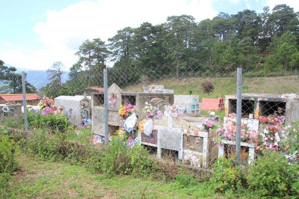

From a right to reality: a Honduran community's struggle to exercise its right to be heard
By jesse.worker - February 4th, 2016

Image: The cemetery that the community of Azacualpa, Honduras is fighting to protect (photo credit: Rights Action)
Escrito por/written by: Clarisa Vega, IDAMHO
This blog was written by a partner and contributor to the Environmental Democracy Index. It has been translated from Spanish by Laura Razzuri. The original version follows the english version. (Este blog fue escrito por un socio y colaborador del Índice de Democracia Ambiental. Ha sido traducido del español por Laura Razzuri. La versión original sigue la versión Inglés.)
Honduras ranks 46th of 70 on the public participation pillar of EDI despite having a constitutional provision supporting public participation. However, since EDI measures the extent to which these rights are supported by procedures across environmental law framework, it still receives a score that places it in the bottom half. Weak supporting laws and institutions that often fail to protect this right. The community of Azacualpa has faced an unresponsive government when it tried to use this right to challenge a multinational mining company.
Article 5 of the Honduras’s Constitution states:
“The government must be founded on the principle of democratic participation from which stems national integration. This implies participation by all political sectors in public administration, in order to ensure and strengthen the progress of Honduras, based upon political stability and national conciliation.”
This type of language has not been fully translated into environmental law, meaning the government is not obliged to actively seek out public participation and the practice of sharing relevant and timely information about a decision that would impact a community is not widespread.
This is clearly seen in the case of Azacualpa, a community in the western part of Honduras, which has openly opposed the exploitation of its land by foreign companies. Nevertheless, the government and companies often ignore the public’s opinion, barring people from their right to participating in the decision making process that will affect their land.
Currently, the people of Azucualpa are at odds with MINOSA, a subsidiary of a Canadian gold and copper production company, Aura Minerals. MINOSA holds titles to mine for gold and other minerals in the neighboring communities of San Miguel, San Andres and Azacualpa. The people of San Miguel and San Andres were forced to relocate to clear the way for the mining project and Azacualpa is expected to do the same. However the community has strongly opposed the mining project and is currently resisting its implementation.
MINOSA plans to mine a hillside that houses a historic cemetery, where the people of Azacualpa, San Andres, and San Miguel have been burying their loved ones for over 200 years. Last year, the community held a meeting to express their reservation for the project and refusal to mine the cemetery. Despite many efforts on behalf of MINOSA to convince the community to approve the project, including persuading the Ministry of Health to declare the cemetery unsanitary, the people of Azacualpa continued to protest the projects continuation.
The project has threatened the livelihoods, health, and safety of the people of Azacualpa. In an effort to intimidate the public, MINOSA, has filed complaints with the police directorate, resulting in the arrest of many protestors. Against the will of the people, MINOSA has continued its operations without delay, leaving the community defenseless and without rights.
The case of MINOSA in Azacualpa demonstrates how easily the right to public participation can be distorted. Even with active public participation, voices from the community often come second to strong economic interests or are weakened by administrative authorities that lack the power to enforce regulations.
Currently, The National Association of Non-Governmental Associations (ASONOG) in Honduras, which gives a coalition of organizations and volunteers who seek to defend the rights of the vulnerable in Honduras, has offered support and helped mobilize the people of Azacualpa.
Los resultados para Honduras en el INDICE DE DEMOCRACIA AMBIENTAL (EDI), un estudio realizado en el año 2014 patrocinado por el Instituto de Recursos Mundiales (WRI) y la Iniciativa de Acceso (TAI) sobre los derechos de Acceso a la Información, a la participación y a la Justicia ambiental, establecidos en la Declaración de Rio sobre Medio Ambiente y Desarrollo, con el objeto de medir la calidad de la Leyes y normas vinculantes a nivel nacional y la protección de esos derechos, no significó una calificación satisfactoria para nuestro país en la segmento que corresponde a la Participación pública.
El estudio se hizo a través de 75 indicadores desarrollados en el marco de las Directrices de Bali, un Acuerdo adoptado por Programa de las Naciones Unidas para el Medio Ambiente (PNUMA) y reconocido internacionalmente para la elaboración de la Legislación Nacional. El estudio refleja que Honduras está en el puesto 46 de 70 cuando se mide la participación pública.
Si bien es cierto el Estado de Honduras ha aprobado legislación nacional en el tema de la participación pública incluyendo la Constitución de la República que en su artículo 5 reformado incorpora una extensa disposición al respecto, la protección de ese derecho se ve vulnerado cuando no existen los mecanismos o no se cumplen los requisitos que entraña dar las condiciones para hacer efectiva la participación y ésta se vuelve inocua pues no cumple con el rol que la democracia exige. Por instancia, no es requerido que el gobierno busca participación pública y es poco común que comparten información pertinente y oportuna.
A pesar de la inclusión de la participación pública en la Constitución, el derecho a dicha participación no ha sido bien desarrollado en las leyes ambientales. Por ejemplo, el gobierno no tiene la obligación de buscar activamente la participación y las necesidades del público para compartir información oportuna y relevante acerca de una próxima decisión a tomar.- No se ha generalizado.
Es el caso de Azacualpa una comunidad en el Occidente del país que abiertamente se opone a la operación de una explotación minera en su territorio, sin embargo el Gobierno y la Empresa, hacen caso omiso de las opiniones de la gente volviendo inoperante el derecho a opinar y a participar.
La Empresa Minerales de Occidente S.A (MINOSA), de origen Canadience (AURA MINERALS) es titular de una Concesión minera para la extracción de oro y otras sustancias en las comunidades de San Miguel, San Andrés y Azacualpa jurisdicción del Municipio de la Unión, Copán, bajo la técnica de cielo abierto. Las comunidades de San Miguel y San Andrés fueron desplazadas de sus asentamientos originales para realizar la extracción minera en dichos sitios. Actualmente la pretensión de la Empresa es que la comunidad de Azacualpa también se traslade a otra zona, empezando con el cerro donde se encuentra el Cementerio, el cual ha sido utilizado por las tres comunidades desde hace 200 años para dar sepultura a sus seres queridos.
La Compañía Minerales de Occidente S.A. (MINOSA) y algunos miembros de las comunidades de Azacualpa, San Miguel y San Andrés suscribieron un Convenio, asesorado y redactado por Abogados de la Empresa Minera, según vecinos de la comunidad, para explotar el cerro El Cementerio comprometiéndose a construir 396 viviendas con todos sus servicios básicos a cambio de dicha explotación, documento legalmente exigible pero desfavorable para las comunidades. Los vecinos de Azacualpa al no sentirse representados por el Patronato se han agrupado en un Comité Ambientalista para desarrollar acciones de defensa de sus derechos.
Otro punto especialmente relevante es que la Empresa se comprometió a no explotar en el Cerro El Cementerio a menos de 200 metros del mismos sin embargo la explotación se lleva a cabo a 50 metros poniendo en peligro las vidas y bienes de la comunidad y en contra de la voluntad de la población quien se ha manifestado en el ejercicio del derecho de participación en contra de ésta explotación.
Según los pobladores como estrategia para disuadir, amedrentar y atemorizar, la Empresa MINOSA han presentado denuncias ante la Dirección Policial de Investigación (DPI) y al Ministerio Publico bajo la figura penal de la Usurpación, en vista que los habitantes se han tomado el cerro y existen amenazas de desalojo violento en contra de la comunidad. Tres de los manifestantes fueron detenidos ilícitamente y estuvieron guardando prisión, quedando indefensa la población y en evidente atropello a sus derechos.
La Asociación Nacional de Organizaciones No Gubernamentales (ASONOG) con sede en la ciudad de Santa Rosa de Copán ha estado dando acompañamiento y asesoría y tienen en perspectiva a corto plazo organizar una coalición de organizaciones y personas voluntarias que apoyen a las comunidades en la defensa de sus derechos, especialmente el de la participación ciudadana en asuntos ambientales.
Lo anterior nos demuestra las distorsiones del derecho de participación, cuando aun habiendo participación pública activa no se logran los objetivos en vista que existen intereses económicos más fuertes y poderosos y la discrecionalidad o debilidad del ejercicio de la autoridad de los organismos administrativos no permiten que se valoren y consideren las posiciones y determinaciones del público en el proceso de toma de decisiones que se orienten al bien común.